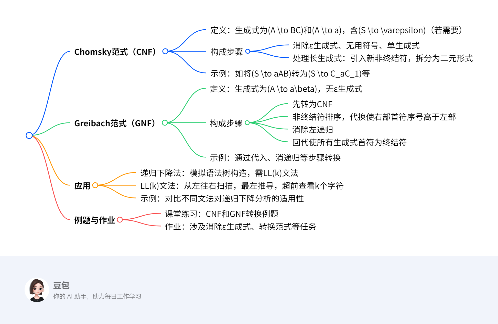

第四章：上下文无关文法与下推自动机3¶
概览¶
一段话总结¶
文档主要介绍Chomsky范式（CNF）和Greibach范式（GNF）这两种上下文无关文法的范式。CNF生成式形式为\(A \to BC\)和\(A \to a\)，构成步骤包括消除ε生成式等操作并对长生成式拆分；GNF生成式形式为\(A \to a\beta\)，需先转为CNF，再经排序、代换、消左递归、回代等步骤构成。文中还提及上下文无关文法变换在编辑器语法分析（如递归下降法、LL(k)文法）中的应用，并给出相关例题与作业。
思维导图¶
¶
详细总结¶
一、Chomsky范式（CNF）¶
定义：2型文法\(G=(N,T,P,S)\)，生成式为\(A \to BC\)（\(A,B,C \in N\)）和\(A \to a\)（\(a \in T\)），若含\(\varepsilon \in L(G)\)，则仅有\(S \to \varepsilon\)且\(S\)不在其他生成式右侧。
构成步骤：
1. 消除ε生成式、无用符号、单生成式（算法1-4）。
2. 处理长生成式：
- 若生成式为\(A \to D_1D_2\cdots D_n\)（\(n \geq 2\)），对每个\(D_i\)，若为终结符则引入新非终结符\(B_i \to D_i\)，若为非终结符则\(B_i = D_i\)，将原生成式转为\(A \to B_1B_2\cdots B_n\)。
- 若\(n > 2\)，进一步拆分为二元形式，如\(A \to B_1C_1\)，\(C_1 \to B_2C_2\)，…，\(C_{n-1} \to B_{n-1}B_n\)（\(C_i\)为新非终结符）。
示例：
- 文法\(G\)含\(S \to aAB\)，转换为\(S \to C_aC_1\)，\(C_a \to a\)，\(C_1 \to AB\)；\(A \to BBB\)转为\(A \to BC_2\)，\(C_2 \to BB\)。
二、Greibach范式（GNF）¶
定义：2型文法\(G=(N,T,P,S)\)，生成式为\(A \to a\beta\)（\(A \in N\)，\(a \in T\)，\(\beta \in N^*\)），无ε生成式。
构成步骤：
1. 转为CNF（生成式为\(A \to a\)或\(A \to BC\)）。
2. 非终结符排序与代换：按顺序对\(A_i \to A_j\beta\)（\(j < i\)）用高序号非终结符代换，使右部首符序号高于左部。
3. 消除左递归：对最高序号非终结符\(A_n \to A_n\gamma\)，引入新非终结符消除左递归，使生成式以终结符开头。
4. 回代：从高到低将\(A_n\)、\(A_{n-1}\)等生成式回代，使所有生成式右部首符为终结符。
示例：
- CNF文法\(A \to BC\)，\(B \to CA|b\)，\(C \to AB|a\)，经代换、消递归、回代后，最终生成式均以终结符开头（如\(C \to bCB|a|\cdots\)）。
三、上下文无关文法变换的应用¶
递归下降法：
- 原理：通过函数递归调用模拟语法树自上而下构造（最左推导）。
- LL(k)文法：需超前查看\(k\)个字符决定生成式，第一个\(L\)为从左往右扫描，第二个\(L\)为最左推导。
- 示例对比：
- 文法\(E \to F*F|F/F\)无法用递归下降法，因无法通过超前查看区分\(*\)和\(/\)。
- 转换为GNF后可减少重复解析，提高性能。
四、例题与作业¶
| 类型 | 内容 |
|---|---|
| 课堂练习 | CNF转换：如将(S \to bA |
| GNF转换：如消ε生成式后转为CNF，再排序、消递归等。 | |
| 作业 | 11题：消除ε、单生成式和无用符号，转为CNF。 |
| 15题：将文法转为等价GNF。 |
关键问题¶
-
Chomsky范式和Greibach范式的核心区别是什么？
答案：CNF生成式为\(A \to BC\)（二元非终结符）和\(A \to a\)（终结符），侧重结构规范化；GNF生成式为\(A \to a\beta\)（以终结符开头），侧重首符为终结符，便于语法分析（如递归下降法）。 -
将上下文无关文法转换为GNF的关键步骤有哪些？
答案：关键步骤包括： - 先转为CNF；
- 非终结符排序并代换，使右部首符序号高于左部；
- 消除左递归，使最高序号非终结符生成式以终结符开头；
-
从高到低回代，使所有生成式首符为终结符。
-
为什么递归下降法需要文法满足LL(k)条件？
答案：递归下降法通过超前查看\(k\)个字符决定采用哪个生成式，LL(k)文法要求从左往右扫描时，能通过最左推导和超前查看\(k\)个字符唯一确定生成式，避免解析歧义。若不满足，无法在有限查看范围内决定分支，导致解析失败。
Chomsky范式¶
Chomsky范式（CNF）概述¶
定义：
- 适用范围：2型文法（上下文无关文法）\( G=(N, T, P, S) \)。
- 生成式形式：
- 必选形式：\( A \to BC \)（\( A, B, C \)为非终结符）和\( A \to a \)（\( a \)为终结符）。
- 特殊情况：若文法包含空串\( \varepsilon \)，则允许存在唯一生成式\( S \to \varepsilon \)，且非终结符\( S \)不能出现在任何其他生成式的右侧。
- 核心性质：每个上下文无关文法都存在等效的CNF（定理4.3.1）。
CNF的构成步骤¶
- 预处理：
-
使用算法1-4依次消除ε生成式（空串生成式）、无用符号（无法导出终结符或无法从起始符到达的符号）和单生成式（形如\( A \to B \)的生成式）。
-
处理长生成式（\( n \geq 2 \)）：
- 步骤1：对生成式\( A \to D_1D_2\cdots D_n \)，若\( D_i \)为终结符，引入新非终结符\( B_i \)并添加生成式\( B_i \to D_i \)；若\( D_i \)为非终结符，则令\( B_i = D_i \)，将原生成式转换为\( A \to B_1B_2\cdots B_n \)。
- 步骤2：若\( n > 2 \)，进一步拆解为二元生成式链。例如：
[ A \to B_1C_1, \quad C_1 \to B_2C_2, \quad \dots, \quad C_{n-1} \to B_{n-1}B_n ]
其中\( C_i \)为新引入的非终结符，确保每个生成式右侧仅含2个非终结符。
CNF构成示例¶
原始文法（已预处理，无ε、循环、无用符号和单生成式）：
[
G = ({A, B, S}, {a, b}, P, S), \quad P: S \to aAB \mid BA, A \to BBB \mid a, B \to AS \mid b
]
转换过程：
1. 直接符合CNF的生成式：
- \( S \to BA \)（\( BA \)为两个非终结符，符合\( A \to BC \)）。
- \( A \to a \)、\( B \to AS \)（\( AS \)为两个非终结符）、\( B \to b \)均符合CNF，直接保留到新文法\( G_1 \)的生成式集合\( P_1 \)。
- 处理不符合CNF的生成式：
- \( S \to aAB \)：
- 终结符\( a \)需引入新非终结符\( C_a \)，添加\( C_a \to a \)。
- 非终结符\( A, B \)直接保留，令\( C_1 \to AB \)，最终生成式为\( S \to C_aC_1 \)。
- \( A \to BBB \)（\( n=3 > 2 \)）：
- 拆解为二元链：引入新非终结符\( C_2 \)，生成式变为\( A \to BC_2 \)和\( C_2 \to BB \)。
等效CNF文法\( G_1 \)的生成式：
[
P_1: \quad S \to BA \mid C_aC_1, C_a \to a, C_1 \to AB, A \to BC_2 \mid a, C_2 \to BB, B \to AS \mid b
]
总结¶
- 核心目标：将任意上下文无关文法转换为仅含二元非终结符生成式和终结符生成式的规范形式，便于语法分析（如自底向上分析）。
- 关键操作：通过引入新非终结符，将长生成式拆解为二元结构，确保所有生成式符合CNF定义。
Greibach范式¶
Greibach范式（GNF）概述¶
定义：
- 适用范围：2型文法（上下文无关文法）\( G=(N, T, P, S) \)。
- 生成式形式：
- 所有生成式均为 \( A \to a\beta \)（\( A \in N \)为非终结符，\( a \in T \)为终结符，\( \beta \in N^* \)为非终结符串）。
- 核心要求：文法不含ε生成式（即不允许生成式右部为空串\( \varepsilon \)）。
- 核心性质：任何2型文法都存在等效的GNF（定理4.3.2）。
GNF的构成步骤¶
- 转换为Chomsky范式（CNF）：
-
先将原始文法转换为CNF，确保生成式仅含 \( A \to a \)（终结符）或 \( A \to BC \)（两个非终结符）形式。
-
非终结符排序与代换：
- 排序规则：为非终结符指定顺序（如\( A_1, A_2, \dots, A_n \)），低位在前，高位在后（例：\( A \)为低位，\( C \)为高位）。
-
代换目标：对形如 \( A_i \to A_j\beta \)（\( j < i \)，即右部首符序号低于左部）的生成式，通过代入高序号非终结符的生成式，将其转换为 \( A_i \to A_l\beta \)（\( l > i \)，即右部首符序号高于左部）。
-
消除左递归：
-
对最高序号的非终结符（如\( A_n \)）的左递归生成式（如 \( A_n \to A_n\gamma \)），引入新非终结符\( A_n' \)，将其拆分为：
[ A_n \to a\beta \mid a\beta A_n', \quad A_n' \to \gamma \mid \gamma A_n' ]
确保\( A_n \)的生成式以终结符开头。 -
回代过程：
- 从最高序号非终结符开始，将其生成式回代入低序号非终结符的生成式，使每个生成式的右部首字符为终结符。
-
例：将\( A_n \)的生成式代入\( A_{n-1} \)，再将\( A_{n-1} \)的新生成式代入\( A_{n-2} \)，以此类推。
-
处理消递归引入的新非终结符：
- 对消除左递归时引入的新非终结符（如\( A_1', A_2', \dots \)），通过代换使其生成式右部首字符也为终结符。
GNF构成示例¶
原始CNF文法：
[
\begin{cases}
A \to BC \quad \text{①} \
B \to CA \mid b \quad \text{②} \
C \to AB \mid a \quad \text{③}
\end{cases}
]
转换步骤：
1. 非终结符排序：设顺序为\( A \)（低位）、\( B \)、\( C \)（高位）。
2. 代换处理：
- 对\( C \to AB \)（\( A \)序号低于\( C \)），代入\( A \to BC \)得：
[
C \to BC B \mid a \quad \text{④}
]
- 再代入\( B \to CA \mid b \)得：
[
C \to CAC B \mid bC B \mid a \quad \text{⑤}
]
3. 消除左递归（针对\( C \to CACB \mid \dots \)）：
- 拆分为：
[
C \to bCB \mid a \mid bCBC' \mid aC', \quad C' \to ACB \mid ACBC' \quad \text{⑥⑦}
]
4. 回代：
- 将\( C \)的生成式⑥代入\( B \to CA \mid b \)，得：
[
B \to bCBA \mid aA \mid bCBC'A \mid aC'A \mid b \quad \text{⑧}
]
- 将\( B \)的生成式⑧代入\( A \to BC \)，得：
[
A \to bCBAC \mid aAC \mid bCBC'AC \mid aC'AC \mid bC \quad \text{⑨}
]
- 最终所有生成式均以终结符（\( a/b \)）开头，符合GNF要求。
核心要点总结¶
- 目标：将任意上下文无关文法转换为右部以终结符开头的规范形式，便于语法分析（如递归下降法）。
- 关键操作：
- 排序与代换：确保生成式右部首符序号高于左部，避免低序号非终结符前置。
- 消左递归：通过引入新非终结符，打破递归环并强制以终结符开头。
- 回代：从高到低逐层代入，确保所有生成式首符为终结符。
- 应用场景：GNF常用于构造LL(k)文法，支持递归下降语法分析器的设计。
上下文无关文法变换的应用¶
上下文无关文法变换的应用——递归下降法与LL(k)文法¶
一、递归下降法的核心原理¶
- 定义：递归下降法是编辑器语法分析中常用的方法，通过函数间的递归调用模拟语法树自上而下的构造过程（即最左推导过程）。
- 关键逻辑：每个非终结符对应一个解析函数，函数根据当前输入字符选择合适的生成式进行推导。
二、LL(k)文法的定义与特征¶
- 定义：
- LL(k)中，第一个 L 表示从左往右扫描输入字符串，第二个 L 表示最左推导，k 表示超前查看k个字符以确定生成式。
- 核心要求：文法必须满足通过超前查看k个字符，能唯一确定当前非终结符应使用的生成式，否则无法用递归下降法解析。
三、示例分析：递归下降法的适用性¶
例1：不适用递归下降法的文法¶
- 文法G：
[ E \to F * F, \quad E \to F / F, \quad F \to \text{id}, \quad F \to (E) ] - 问题：
- 两个E生成式均以非终结符 F 开头，而F可推导为任意长表达式（如
id或(E)）。 - 结论：无论超前查看多少字符，都无法区分应选择乘号（
*）还是除号（/）的生成式，因此该文法不适用递归下降法。
例2：适用递归下降法的文法（经GNF转换）¶
- 文法G'：
[ E \to \text{id}G, \quad E \to (EH, \quad G \to *F, \quad G \to /F, \quad F \to \text{id}, \quad F \to (E, \quad H \to ) ] - 改进点：
- E的生成式以终结符 id 或 ( 开头，G的生成式以 * 或 /** 开头。
- 结论：通过超前查看首字符（如
id、(、*、/），可直接确定生成式，适用于递归下降法。
四、Greibach范式（GNF）的作用¶
- 核心价值：
- 将文法转换为GNF形式（生成式以终结符开头），确保每个生成式右部首字符为终结符，从而满足LL(k)文法的条件。
- 附加优势：减少解析过程中的重复判断，提高语法分析性能。
五、总结¶
| 关键点 | 说明 |
|---|---|
| 递归下降法 | 基于函数递归的自上而下语法分析方法，依赖LL(k)文法。 |
| LL(k)文法条件 | 需通过超前查看k个字符唯一确定生成式，核心是生成式首字符可区分。 |
| GNF的作用 | 通过转换生成式以终结符开头，使文法满足LL(k)条件，提升解析效率。 |
| 示例对比 | 首字符为非终结符的文法（如例1）无法使用递归下降法，首字符为终结符的文法（如例2）适用。 |